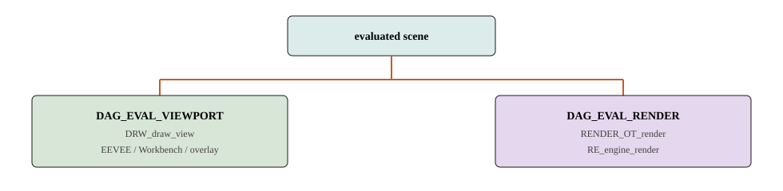

Q151–200 · 渲染
求值之后才分道
视口和 F12 共享求值结果，不共享像素后端。没有名为 DEG_evaluate 的总开关。函数走读见渲染章。

151152153154155 156157158159160 161162163164165 166167168169170 171172173174175 176177178179180 181182183184185 186187188189190 191192193194195 196197198199200
求值图与 Copy-on-eval
151 对外求值入口叫什么？
DEG_evaluate_on_refresh（数据变了）和 DEG_evaluate_on_framechange（换帧）。包装在 BKE_scene_graph_update_tagged / BKE_scene_graph_evaluated_ensure。没有 DEG_evaluate 总函数。
搜错名字会以为 depsgraph「没入口」。
152 图里节点分几层？
ID 节点 → 组件（TRANSFORM / GEOMETRY / SHADING …）→ 操作节点，边是 Relation。构建：DepsgraphNodeBuilder + DepsgraphRelationBuilder。
tag 一块几何不必重算全世界变换，靠这套粒度。
source/blender/depsgraph/ · 图里有什么
153 视口图和 F12 图为何要两张？
154 Copy-on-eval 复制什么？
求值写副本（deg_eval_copy_on_write.cc），原始 Main 里的 Object/Mesh 尽量不动。查询 DEG_get_evaluated / DEG_get_original_id。
所以 F12 不会直接把视口正在编的 DNA 网格改成细分后的数组——除非你 Apply。
155 画和渲染怎样拿到「算完的网格」？
BKE_object_get_evaluated_mesh（可经 geometry_set_eval，再 BKE_mesh_wrapper_ensure_subdivision）。编辑态还有 cage / final。
不要用原始 ob->data 当视口顶点源——那常是未改修改器的基网格。
BKE_object_get_evaluated_mesh · depsgraph
156 内部求值阶段顺序？
COPY_ON_EVAL → 可见性 → 并行跑 OperationNode::evaluate（deg_eval.cc）。修改器挂在 GEOMETRY 相关操作上（BKE_object_eval_uber_data）。
分析时跟着操作节点走，不要假设单线程从场景根 DFS。
deg_eval.cc · 内部阶段
157 动画换帧为什么不走 on_refresh？
时间变了，即使没人改 DNA 也要重评驱动、约束、随时间的节点。on_framechange 表达这个原因。数据编辑走 on_refresh。
两条入口避免「每帧都当全部 ID 刚被用户改过」。
DEG_evaluate_on_framechange · Depsgraph
158 漏掉 tag 会怎样？
求值图以为几何仍干净，Draw/Cycles 继续用旧副本。症状：滑条或脚本改了数据，画面或 F12 仍是旧网格。
UI–数据章的 update / EDBM_update 就是为了避免这个。
DEG_id_tag_update · 更新
159 为什么原始 Mesh 尽量不动？
撤销、文件、多用户引用、编辑态 BMesh 都指向原 ID。若求值原地细分，撤销和引用会一起烂掉。副本把「显示/出图世界」和「作者世界」分开。
160 geometry_set_eval 是什么？
求值后物体上的几何集合：网格、曲线、实例等。几何节点修改器写这里。Draw/Cycles 再抽出要画或要同步的网格。
它不是 BMesh，也不是 DNA 字段。
BKE_object_eval_assign_data · 求值链
161 可见性阶段和 hide_render 的关系？
162 编辑模式求值为何还要转数组？
修改器和绘制要连续数组。BKE_mesh_wrapper_from_editmesh / BM_mesh_bm_to_me_for_eval 出临时网格，用户仍留在编辑模式。
不要把求值转换误认成 Tab 出去。
Draw 与 overlay
163 视口一帧从哪进 Draw？
view3d_main_region_draw → DRW_draw_view（draw/intern/draw_context.cc）。这里 CTX_data_expect_evaluated_depsgraph：该求的已经求完。
Draw 不负责跑修改器栈。
164 DRW_draw_view 里面三步？
ED_view3d_engine_type 决定引擎 → enable_engines → engines_init_and_sync（DEG_OBJECT_ITER）→ engines_draw_scene。接口：init / begin_sync / object_sync / end_sync / draw。
网格批来自求值网格 + draw_cache_impl_mesh.cc。
DRW_render.hh · 一帧
165 谁决定 Solid 用 Workbench 还是 EEVEE？
View3D 着色类型 + 场景引擎标志。ED_view3d_engine_type(scene, v3d->shading.type)。线框/Solid → Workbench；Material 多数走 EEVEE；Rendered + Cycles → external engine。
换 Z 键只改这次 enable 的集合。
166 overlay 为什么几乎总开？
选择轮廓、编辑线、网格显示、gizmo 不属于出图引擎。活在 DRWViewData。关掉着色引擎仍可能要选中高亮。
它不是 RenderEngineType，也不能当 scene.r.engine。
167 F12 的 EEVEE 和视口 EEVEE 如何注册？
168 绘制缓存和 DNA 网格是一份吗？
不是。GPU 批是从求值网格抽出的缓存，随 tag 失效。DNA / BMesh 是作者数据。Draw 不应写回 verts_num。
draw_cache_impl_mesh.cc · draw
169 Select 引擎是干什么的？
170 为什么说着色模式切换不改 Mesh DNA？
改的是 View3D 空间数据（v3d->shading）。同一 Mesh 可以同时在两个窗口用不同着色。数据块不因此复制。
171 gpu 模块在这一帧扮演什么？
后端无关的缓冲、着色器、FBO。EEVEE/Workbench/overlay 经它提交。Cycles kernel 不走这条。
本站不写 Vulkan vs OpenGL 对照表。
source/blender/gpu/ · gpu
172 视口卡顿应该先怪 Draw 还是 depsgraph？
先分：几何求值贵（修改器、节点）还是 GPU 提交贵（高模批、EEVEE 材质）。前者在 depsgraph/modifiers；后者在 draw/gpu。编辑模式还可能卡在 BMesh→wrapper。
不要一律「渲染太慢」。
EEVEE / Workbench / 预览
173 EEVEE 从哪取场景？
eevee::Instance 从 depsgraph 取求值 Scene / ViewLayer。物体网格仍是求值网格。它不读未求值的 BMesh。
draw/engines/eevee/ · EEVEE
174 节点怎样变成 GPU shader？
{kind=link}
175 Workbench 为什么不编译完整节点树？
Solid/线框要快：MatCap、工作室光、cavity。workbench_engine.cc 不走完整 GPU_material_from_nodetree。建模看结构是它的产品定位。
想看 Principled，换 Material/Rendered。
176 EEVEE 的 F12 是路径追踪吗？
不是。eevee_render → DRW_render_to_image 仍是光栅。只有引擎字符串 CYCLES 才进 kernel。
用户说「渲染」可能指任一引擎；源码要看 scene.r.engine。
177 RE_USE_EEVEE_VIEWPORT 影响谁？
Cycles 作为场景引擎时，许多视口/材质预览仍用 EEVEE 编译。Rendered 模式才走 external view_draw。功能上预览快，分析上不要看到 CYCLES 就以为每块像素都是 kernel。
178 探针、光照缓存本轮为什么不写？
目录约定弱写 EEVEE 光照/探针。主线只要记住：它们是光栅引擎状态，不是 DNA Mesh，也不是 Cycles integrator 设置。
需要时再对 draw/engines/eevee 单开。
179 同一材质在 Workbench 和 EEVEE 下为何颜色不同？
Workbench 用简化着色；EEVEE 用节点编译的 GPU 材质。不是存了两份 Material DNA。切换引擎等于换解释器。
180 编辑线画在 EEVEE 场景 pass 里吗？
一般在 overlay。即使 Material 预览开着，边、cage、gizmo 仍是叠层。F12 没有这套交互线。
181 GPU 材质缓存何时失效？
节点树或相关 ID 标脏后重编译。只动物体变换通常不重编 shader。只动网格拓扑可能重抽批，不一定重编 Principled。
tag 的 recalc 类型决定贵不贵。
GPU_material_from_nodetree · update 类型
182 为什么说 EEVEE 住在 draw 树里是合理的？
183 材质预览球走哪条编译？
常走 EEVEE 视口标志那条，即使场景是 Cycles。球上看对不代表 F12 闭包一致。对比请看真 F12 或 Rendered+Cycles。
RE_USE_EEVEE_VIEWPORT · 功能地图
F12 / Cycles / 节点分叉
185 按 F12 的函数链？
RENDER_OT_render（render_internal.cc）→ RE_RenderFrame → RE_engine_render → RE_engines_find(scene.r.engine)。未知 id 回落 BLENDER_EEVEE。
用户手感是一个键，源码是 Operator + 调度 + 引擎回调。
186 Cycles 怎样接到 Blender 场景？
Python CyclesRender（bl_idname = 'CYCLES'）→ _cycles.render。BlenderSync::sync_data（sync.cpp）从 depsgraph 迭代求值物体；网格 object_to_mesh。
同步的是求值世界，不是 edit_mesh 指针。
intern/cycles/blender/ · 怎样接到场景
187 intern/cycles 内部怎么分层？
session/ 采样分块缓冲；scene/ 自己的 Object/Shader/Integrator；integrator/ 的 PathTrace；kernel/ SVM/闭包；device/ CPU/CUDA 等（预编译库不拉）。
读同步先看 blender/，再下到 scene/kernel。
188 节点到 Cycles 闭包的函数？
intern/cycles/blender/shader.cpp：sync_materials → add_nodes / add_node，目标 SHD_OUTPUT_CYCLES，再 SVMCompiler。运行时 kernel/svm/closure.h。
与 GPU_material_from_nodetree 分道。
189 为什么 BMesh 不进 kernel？
kernel 要的是求值后的三角/属性数组。编辑态半边先转换并按 Render 模式套修改器。改拓扑必须写回并标脏，UI–数据 + 建模已经保证这条。
190 render 模块自己做积分器吗？
不做。它管结果、图层、引擎注册与作业。选 Cycles 还是 EEVEE 是查表，不是内嵌路径追踪。
RE_engine_render · render
191 Hydra 在地图里为何只点名？
source/blender/render/hydra 存在，服务外部引擎桥。主线学习网格编辑和 Cycles/EEVEE 分道，不展开 USD 视口。
192 合成和 F12 的关系？
F12 pipeline 里可以再走合成。本站主线在「引擎写出图层」处停。不要在 Cycles kernel 里找 Glare 节点实现。
193 视口 Rendered+Cycles 和 F12 共享 session 吗？
可以共享引擎概念，但分辨率、采样、相机、depsgraph 模式仍可不同。不要假设「视口看到第 32 样本 = F12 已算完」。
分析以 DAG_EVAL_RENDER 的 F12 作业为准。
draw::external::Engine · Draw
194 采样、分块在哪一层？
Cycles 的 session/。Blender render 作业催的是引擎回调；tile 策略不在 editors/render 里手写。UI 上的采样数是 RNA → DNA（场景/Cycles 设置）再 sync 进 session。
intern/cycles/session/ · 分层
195 为什么说「一套节点语义、两套机器码」？
用户只维护一棵 NodeTree。EEVEE 编 GPU shader，Cycles 编 SVM/OSL/闭包。输出插座用 SHD_OUTPUT_EEVEE / SHD_OUTPUT_CYCLES 分流。语义尽量对齐，数值不必逐像素相同。
196 device 库为什么分析不拉？
CUDA/HIP 等是预编译二进制与内核，对理解「谁同步场景」不是必需。读 device/ 的接口即可。约束禁止为看图去 make update。
197 渲染图层（view layer）在分道里扮演什么？
视口图按当前 View Layer 建；F12 按要出的层/通道建渲染图。物体集合可见性按层不同。同步 Cycles 时也按层迭代求值物体。
不是「又一种修改器」。
DEG_graph_build_from_view_layer · 建图